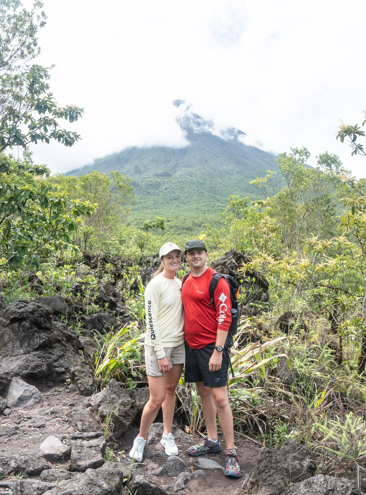

Costa Rica 2023
 Pura vida, welcome to Costa Rica! This vacation was my first one without my parents or with a club, so it was very nice to just be travelling with my partner and not have to worry about appeasing a big group. This trip was very laid-back, Ben planned most of where we were going to go and what we’d do, since I was busy with DR and Florida Field Schools for IU at the time. He kept our schedules open each day except for the day we would dive on Cano island, so that we could get to know each spot and check out what we’d wanted to do beforehand. Ben had some travel woes, which made me nervous but luckily all worked out. I was already in Miami with my parents checking out housing for the upcoming school year starting at FIU, so Ben’s plan was that he would fly from Indy to Miami the night before, stay with us at the hotel, and then we’d fly to Costa Rica the next morning. Well, due to bad rain in Indianapolis, his flight was delayed, and it was the last one out for the evening. I was stressed because I didn’t really want to wait for him alone in the airport in Costa Rica, but luckily American rebooked him the first flight the next morning so he had a long enough layover to make our scheduled flight to San Jose.
Pura vida, welcome to Costa Rica! This vacation was my first one without my parents or with a club, so it was very nice to just be travelling with my partner and not have to worry about appeasing a big group. This trip was very laid-back, Ben planned most of where we were going to go and what we’d do, since I was busy with DR and Florida Field Schools for IU at the time. He kept our schedules open each day except for the day we would dive on Cano island, so that we could get to know each spot and check out what we’d wanted to do beforehand. Ben had some travel woes, which made me nervous but luckily all worked out. I was already in Miami with my parents checking out housing for the upcoming school year starting at FIU, so Ben’s plan was that he would fly from Indy to Miami the night before, stay with us at the hotel, and then we’d fly to Costa Rica the next morning. Well, due to bad rain in Indianapolis, his flight was delayed, and it was the last one out for the evening. I was stressed because I didn’t really want to wait for him alone in the airport in Costa Rica, but luckily American rebooked him the first flight the next morning so he had a long enough layover to make our scheduled flight to San Jose.
Diving in the Cano Island Biological Reserve is a testament to Costa Rica’s extremely high priority of protecting natural resources. I had never seen such a high density of sharks on a dive as I did here, which is usually a sign of a healthy ecosystem with strong predator-prey dynamics.
Upon arriving in the capital, we were shuttled to the rental car center and picked up the car we’d be using for our time in the country. Our first stop was driving Northwest to La Fortuna, because we wanted to explore the rain forests and Parque Nacional Volcan Arenal. Between the tiny roads winding up and down mountains and the fact that we’d skipped lunch and were extremely hangry, the drive was not that great. But we persevered and made it to our Airbnb (which I did the booking for) and it was beautiful! We had a huge room, king sized bed, and the most stunning view of Arenal Volcano from our window. Plus, a hot tub! We spent three days here where we explored various parks, hikes, and waterfalls. We did the Mystico Hanging Bridges tour, went to La Fortuna Waterfall, and the Arenal 1968 hike. We also did a guided night hike in the rainforest just on the edge of town. The biodiversity and landscape of the rainforest was breathtaking. We got the most picturesque views of the volcano, the hanging bridges, and the local fauna, including Coatis, Central American Squirrel Monkeys, Capuchin Monkeys, and lots of reptiles on our night hike. I think one of my favorite things to do was the afternoons we would drive down to El Salto, the rope swing just south of town. Tourists and locals alike were taking their turn plunging into the water below. Of course, Ben had to show off with a couple of backflips (I also encouraged him) but it was fun to hang out and meet people that way too. I also really enjoyed the Arenal 1968 trail that we hiked. It was a 2.9 mile hike that took us to the edge of where the lava flow stopped during the 1968 eruption. The views were incredible.
 

The second portion of our trip we moved from the rainforest to the ocean, as we made an 8 hour drive from La Fortuna down to Uvita, making a stop along the way in Playa Hermosa for sushi and to talk to the surf shop we were going to rent boards from later in the week. We stayed for two nights in Uvita so that we could take an all-day diving excursion on Cano Island. This was also a big highlight of the trip.  The Airbnb I’d booked for this portion was little more than a shack with only the necessities: a bathroom, kitchenette, table and chairs for eating, places to put luggage and a loft for sleeping. Which was my first time in this type of accommodation, but it was actually pretty fun, and I liked it a lot. We arrived and settled in, didn’t do a lot in the evening since we’d be diving in the morning and wanted to be fresh. We met at the dive shop, Blacktip Divers, in the morning, boarded the boat and took about an hour ride to our first dive site. We did about a 45 minute dive at 70 feet, which was deeper than I was expecting. I must admit that I wasn’t expecting much from these dives, I’d dove before in the Mexican Pacific, and wasn’t very impressed, as the Eastern Pacific doesn’t have the coral coverage that the Caribbean does. However, as we’d come to find out, where it might’ve been lacking in coral coverage it wasn’t lacking in megafauna presence. Cano Island is nicknamed the “Little Cocos” because of the megafauna that hangs out there. Cocos Island is also owned by Costa Rica, is a biological reserve, and is world renown for it’s ecological importance as a feeding and breeding ground for several pelagic shark species. While Cano isn’t quite as revered, it still serves the same function, and we saw more sharks on these dives (all whitetips) than I’d ever seen on all my dives combined! Which, is typically a good sign of a healthy ecosystem, since sharks rely on a high amount of fish biomass to sustain themselves, this system is functioning quite well to be able to support the high biomass of top predator species. Not to mention, we also saw quite a few, very large turtles, which is always a treat to see! Our survace interval was a stop on the island to explore a bit, which was gorgeous. Ben and I hiked a little trail up to a lookout point to get a gorgeous vista of the island and surrounding waters, and then we headed back to the boat to go out for dive #2. This dive was similar, so many sharks and turtles too, it was awesome. I was also pleasntly surprised at how warm the water is, normally I get chilly even in 80 degree water, but was comfortable the whole time during both dives. We were served a great lunch, and headed back to the mainland after our trip. It was truly an incredible time.
The Airbnb I’d booked for this portion was little more than a shack with only the necessities: a bathroom, kitchenette, table and chairs for eating, places to put luggage and a loft for sleeping. Which was my first time in this type of accommodation, but it was actually pretty fun, and I liked it a lot. We arrived and settled in, didn’t do a lot in the evening since we’d be diving in the morning and wanted to be fresh. We met at the dive shop, Blacktip Divers, in the morning, boarded the boat and took about an hour ride to our first dive site. We did about a 45 minute dive at 70 feet, which was deeper than I was expecting. I must admit that I wasn’t expecting much from these dives, I’d dove before in the Mexican Pacific, and wasn’t very impressed, as the Eastern Pacific doesn’t have the coral coverage that the Caribbean does. However, as we’d come to find out, where it might’ve been lacking in coral coverage it wasn’t lacking in megafauna presence. Cano Island is nicknamed the “Little Cocos” because of the megafauna that hangs out there. Cocos Island is also owned by Costa Rica, is a biological reserve, and is world renown for it’s ecological importance as a feeding and breeding ground for several pelagic shark species. While Cano isn’t quite as revered, it still serves the same function, and we saw more sharks on these dives (all whitetips) than I’d ever seen on all my dives combined! Which, is typically a good sign of a healthy ecosystem, since sharks rely on a high amount of fish biomass to sustain themselves, this system is functioning quite well to be able to support the high biomass of top predator species. Not to mention, we also saw quite a few, very large turtles, which is always a treat to see! Our survace interval was a stop on the island to explore a bit, which was gorgeous. Ben and I hiked a little trail up to a lookout point to get a gorgeous vista of the island and surrounding waters, and then we headed back to the boat to go out for dive #2. This dive was similar, so many sharks and turtles too, it was awesome. I was also pleasntly surprised at how warm the water is, normally I get chilly even in 80 degree water, but was comfortable the whole time during both dives. We were served a great lunch, and headed back to the mainland after our trip. It was truly an incredible time.

The last part of our trip was spent in Playa Hermosa, a small town just south of Jaco, where we spent the last 4 days of our vacation. We took our time with the two hour drive up the coast from Uvita, stopping at little waterfalls and swimming pools along the way. We also stopped at Parque Nacional Manuel Antonio and attempted to get in, but didin’t realize with the popularity of the park that we’d had to have booked a reservation about a month in advance. So, that was a bummer, but just means we have a reason to come back! We did hang out at the beach there for a while, and then made our way North again to our Airbnb. We’d had great luck all trip with our Airbnbs, but this last one gave me at least some troubles.  First, we couldn’t find the place, and the address given to us was wrong, so we waited around 20 mintues for the owner to get in contact with us and send the right address. Then, when we got there I felt a bit unsafe. (nothing happened to us, fortunately) To top things off, there was also definitely some sort of critter that was living with us that kept leaving us little poops as a surprise, so that was a bit gross, and there was a window left open in the bathroom without a screen, so I woke up to about a hundred mosquito bites from the first night sleeping there. Woes of our room aside, this part of the trip was very chill, we didn’t have anything planned other than early morning surf sessions and chilling out in the afternoons! Which felt so nice! We got surf lessons from Ariel at Hermosa Riders and he was so great! He told us about another locals spot just a 15 minute drive north from Jaco that we went to one day. It was just us and one other guy and it started to rain during our session too, which was even more vibey and cool. I got a lot better at surfing, and by the end of the trip was catching and riding waves. I can’t say the next time I’ll surf (not a lot of big waves in Miami!) but I definitely got the surfing itch after this trip.
First, we couldn’t find the place, and the address given to us was wrong, so we waited around 20 mintues for the owner to get in contact with us and send the right address. Then, when we got there I felt a bit unsafe. (nothing happened to us, fortunately) To top things off, there was also definitely some sort of critter that was living with us that kept leaving us little poops as a surprise, so that was a bit gross, and there was a window left open in the bathroom without a screen, so I woke up to about a hundred mosquito bites from the first night sleeping there. Woes of our room aside, this part of the trip was very chill, we didn’t have anything planned other than early morning surf sessions and chilling out in the afternoons! Which felt so nice! We got surf lessons from Ariel at Hermosa Riders and he was so great! He told us about another locals spot just a 15 minute drive north from Jaco that we went to one day. It was just us and one other guy and it started to rain during our session too, which was even more vibey and cool. I got a lot better at surfing, and by the end of the trip was catching and riding waves. I can’t say the next time I’ll surf (not a lot of big waves in Miami!) but I definitely got the surfing itch after this trip.
The end of our trip was smooth getting back to Indiana just in time for the 4th of July weekend at the lake. Costa Rica was a dream vacation, I will definitely be back, as we really only just scratched the surface of all that there is to see and do in this beautiful country.
Image Gallery:


Images courtesy of myself and Ben Rygiel (shot on iPhone, Canon EOS in Ikelite Housing, Nikon D7500)